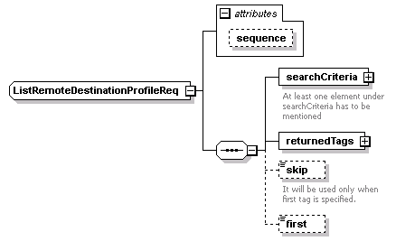
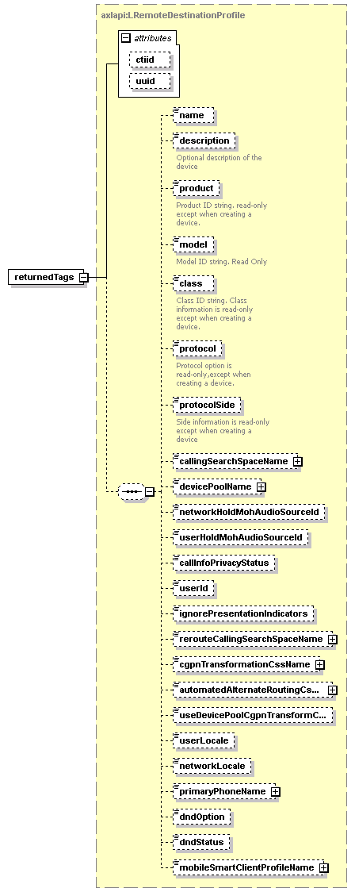

| diagram |  | ||||||||||||
| namespace | http://www.cisco.com/AXL/API/10.5 | ||||||||||||
| children | searchCriteria returnedTags skip first | ||||||||||||
| used by |
|
||||||||||||
| attributes |
|
||||||||||||
| source | <xsd:complexType name="ListRemoteDestinationProfileReq"> <xsd:sequence> <xsd:element name="searchCriteria"> <xsd:annotation> <xsd:documentation>At least one element under searchCriteria has to be mentioned</xsd:documentation> </xsd:annotation> <xsd:complexType> <xsd:sequence> <xsd:element name="name" type="xsd:string" minOccurs="0"/> </xsd:sequence> </xsd:complexType> </xsd:element> <xsd:element name="returnedTags" type="axlapi:LRemoteDestinationProfile" minOccurs="1"/> <xsd:element name="skip" type="xsd:unsignedLong" minOccurs="0"> <xsd:annotation> <xsd:documentation>It will be used only when first tag is specified.</xsd:documentation> </xsd:annotation> </xsd:element> <xsd:element name="first" type="xsd:unsignedLong" minOccurs="0"/> </xsd:sequence> <xsd:attribute name="sequence" type="xsd:unsignedLong" use="optional"/> </xsd:complexType> |
attribute ListRemoteDestinationProfileReq/@sequence
| type | xsd:unsignedLong | ||
| properties |
|
||
| source | <xsd:attribute name="sequence" type="xsd:unsignedLong" use="optional"/> |
element ListRemoteDestinationProfileReq/searchCriteria
| diagram | |||
| properties |
|
||
| children | name | ||
| annotation |
|
||
| source | <xsd:element name="searchCriteria"> <xsd:annotation> <xsd:documentation>At least one element under searchCriteria has to be mentioned</xsd:documentation> </xsd:annotation> <xsd:complexType> <xsd:sequence> <xsd:element name="name" type="xsd:string" minOccurs="0"/> </xsd:sequence> </xsd:complexType> </xsd:element> |
element ListRemoteDestinationProfileReq/searchCriteria/name
| diagram | |||||||
| type | xsd:string | ||||||
| properties |
|
||||||
| source | <xsd:element name="name" type="xsd:string" minOccurs="0"/> |
element ListRemoteDestinationProfileReq/returnedTags
| diagram |  | ||||||||||||||||||
| type | axlapi:LRemoteDestinationProfile | ||||||||||||||||||
| properties |
|
||||||||||||||||||
| children | name description product model class protocol protocolSide callingSearchSpaceName devicePoolName networkHoldMohAudioSourceId userHoldMohAudioSourceId callInfoPrivacyStatus userId ignorePresentationIndicators rerouteCallingSearchSpaceName cgpnTransformationCssName automatedAlternateRoutingCssName useDevicePoolCgpnTransformCss userLocale networkLocale primaryPhoneName dndOption dndStatus mobileSmartClientProfileName | ||||||||||||||||||
| attributes |
|
||||||||||||||||||
| source | <xsd:element name="returnedTags" type="axlapi:LRemoteDestinationProfile" minOccurs="1"/> |
element ListRemoteDestinationProfileReq/skip
| diagram | |||||||
| type | xsd:unsignedLong | ||||||
| properties |
|
||||||
| annotation |
|
||||||
| source | <xsd:element name="skip" type="xsd:unsignedLong" minOccurs="0"> <xsd:annotation> <xsd:documentation>It will be used only when first tag is specified.</xsd:documentation> </xsd:annotation> </xsd:element> |
element ListRemoteDestinationProfileReq/first
| diagram |  |
||||||
| type | xsd:unsignedLong | ||||||
| properties |
|
||||||
| source | <xsd:element name="first" type="xsd:unsignedLong" minOccurs="0"/> |
XML Schema documentation generated by XMLSpy Schema Editor http://www.altova.com/xmlspy